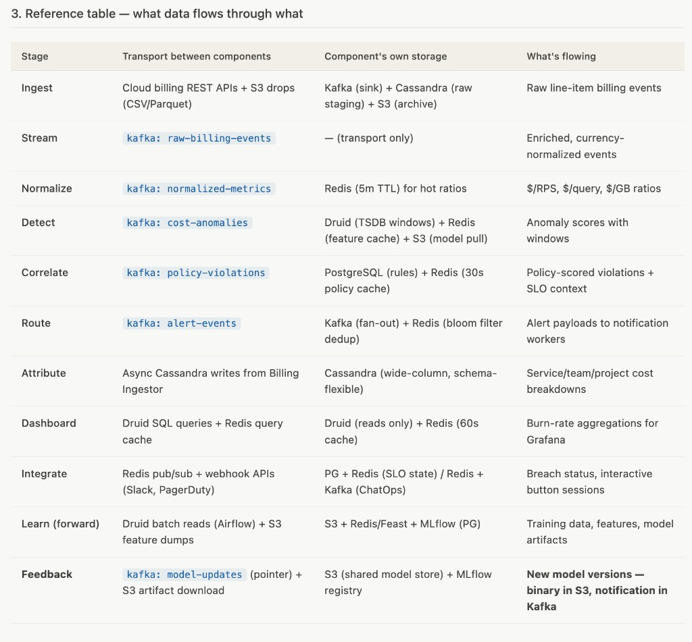
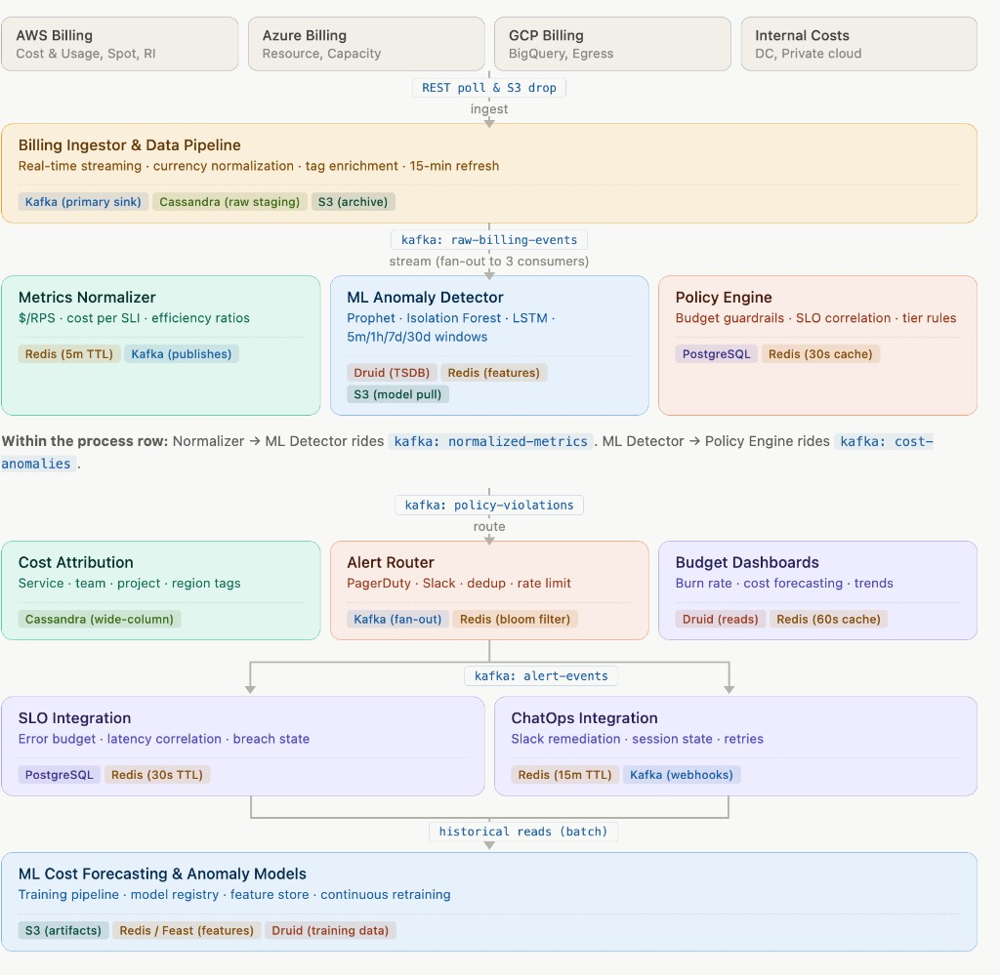

An intelligent cost monitoring platform that makes cloud spend an operational signal as important as latency: 2-minute alert latency for cost anomalies, 95% service coverage, SLO integration for business impact correlation, and budget burn rate management with ML-based anomaly detection.
A "Mission-Critical Cost Operations Platform" that integrates cloud spending with LinkedIn's SLO dashboards and alerting systems. The platform treats cost as an operational signal equal to latency or availability, alerting teams on budget burn anomalies, inefficient resource usage, and cost spikes that correlate with user-facing performance impacts.
| Objective | Target | Measurement |
|---|---|---|
| Alert Latency (Cost Anomaly) | ≤ 2 min | From anomaly detection to alert generation |
| Cost Coverage | ≥ 95% | Percentage of billable services monitored |
| False Positive Rate | ≤ 5% | Avoid alert fatigue with high precision |
| Reliability Impact Detection | ≥ 99% | Must tie cost alerts to user-facing SLO impacts |
| Alert Pipeline Uptime | ≥ 99.99% | Cannot fail silently during cost incidents |
| Budget Attribution Accuracy | ≥ 98% | Correct cost assignment to services/teams |
| Service Category | Cost Profile | Alert Threshold | Correlation SLI |
|---|---|---|---|
| Feed Generation | Compute-heavy, predictable | 20% deviation | Processing latency, throughput |
| Search & Discovery | Memory + compute spikes | 30% deviation | Search latency, relevance score |
| Data Storage | Storage + I/O driven | 15% deviation | Read/write latency, availability |
| ML Training | GPU-heavy, batch patterns | 50% deviation | Training job completion, accuracy |
| CDN & Edge | Bandwidth + egress costs | 25% deviation | Cache hit rate, edge latency |
| Analytics/Reporting | Scheduled, predictable | 10% deviation | Report generation time, freshness |
Time-Series + Behavioral Models: Detect both statistical and contextual cost anomalies
Context-Aware Alerting: Only page when cost anomalies correlate with user impact
| Cost Change | SLO Impact | Alert Priority | Action |
|---|---|---|---|
| +50% cost | Latency improved | 🟢 Low | Slack notification |
| +30% cost | No SLO change | 🟡 Medium | Investigation alert |
| +20% cost | Latency degraded | 🔴 High | Page oncall |
| -20% cost | Errors increased | 🔴 Critical | Immediate page |
Budget SLO Framework: Apply error budget concepts to cost management
Granular Attribution: Track costs by service, team, project, and feature
Problem: Kubernetes cluster pulls from external repo at 10× rate → $20K daily surge, latency SLO green
Actionable Notifications: Cost alerts with context and remediation suggestions
Prevention Over Reaction: Define and enforce cost efficiency policies
Forward-Looking Optimization: Forecast cost trends and plan budget allocation
Two planes run in parallel. The data plane moves billing events forward through Kafka topics with tight latency SLOs (2-minute alert latency). The control plane retrains ML models from historical stores and pushes new model artifacts back to the serving component. The feedback question — how does ML data get back to the Anomaly Detector — is a control-plane question, and the answer is a model registry pattern, not a real-time stream.

Every component has its internal storage (shown as pills inside each box). Every transition between components rides on a named Kafka topic (shown as a pill on each arrow).
kafka: raw-billing-events — Raw billing data from cloud providerskafka: normalized-metrics — $/RPS, $/query efficiency ratioskafka: cost-anomalies — ML-detected anomaly scores with windowskafka: policy-violations — Policy-scored violations with SLO contextkafka: alert-events — Alert payloads to notification workerskafka: model-updates — Model version notifications (control plane)The ML Anomaly Detector (serving) and ML Cost Forecasting (training) are decoupled. They never talk directly. Training reads historical data from Druid, produces new model artifacts in S3, registers them in MLflow, and emits a notification on a Kafka topic. The Detector watches that topic and hot-reloads. This is the industry-standard train/serve split — the same pattern used in LinkedIn's Pro-ML, Uber's Michelangelo, and Airbnb's Bighead.

Models are large (tens to hundreds of MB), retrained on a batch cadence (daily or hourly), and must be versioned for rollback. The feedback path is an object-store handoff + a notification, not a Kafka data stream of features or predictions.
Airflow DAG (daily at 02:00 UTC) pulls the last 30–90 days of cost time-series from Druid, tag attribution from Cassandra, SLO breach history from PostgreSQL, and labeled past incidents from the feedback store.
Spark job computes temporal features (hour-of-day, day-of-week, holiday flags), service features (RPS trends, deployment markers), and cross-service features (upstream dependency cost). Features land in a feature store (Feast, backed by Redis for online serving and S3 for offline training sets).
Spark on a GPU cluster trains Prophet (per service), Isolation Forest (global + per-tier), and LSTM autoencoders (per critical service). Each model writes metrics (MAE, precision, recall, FPR) to the experiment tracker during training.
New models get registered in MLflow with a version number and metadata (training window, feature schema, metrics). A validation job runs the new model against the last 7 days in shadow mode — it scores but doesn't alert. If precision ≥ old model and recall doesn't drop more than 2%, the model is promoted to production stage.
Once promoted, the training pipeline emits a small message to a dedicated Kafka topic: {model_name, version, s3_path, schema_hash, promoted_at}. The message is tiny (hundreds of bytes) — just a pointer. The actual model binary stays in S3.
Every Anomaly Detector replica subscribes to model-updates. On a new message, it downloads the new model from S3, loads it into memory, runs a sanity check (100 synthetic inferences), then atomically swaps the in-memory reference. Old model stays live until swap succeeds — zero-downtime reload. If the swap fails, it stays on the old model and emits an alert.
If the new model produces a spike in false-positive rate within 1 hour of deployment (detected by the Policy Engine flagging too many low-impact alerts), an automated rollback publishes the previous version on model-updates. Detector re-loads the old version. MLflow marks the bad version as archived.
| Stage | Transport between components | Component's own storage | What's flowing |
|---|---|---|---|
| Ingest | Cloud billing REST APIs + S3 drops (CSV/Parquet) | Kafka (sink) + Cassandra (raw staging) + S3 (archive) | Raw line-item billing events |
| Stream | kafka: raw-billing-events | — (transport only) | Enriched, currency-normalized events |
| Normalize | kafka: normalized-metrics | Redis (5m TTL) for hot ratios | $/RPS, $/query, $/GB ratios |
| Detect | kafka: cost-anomalies | Druid (TSDB windows) + Redis (feature cache) + S3 (model pull) | Anomaly scores with windows |
| Correlate | kafka: policy-violations | PostgreSQL (rules) + Redis (30s policy cache) | Policy-scored violations + SLO context |
| Route | kafka: alert-events | Kafka (fan-out) + Redis (bloom filter dedup) | Alert payloads to notification workers |
| Attribute | Async Cassandra writes from Billing Ingestor | Cassandra (wide-column, schema-flexible) | Service/team/project cost breakdowns |
| Dashboard | Druid SQL queries + Redis query cache | Druid (reads only) + Redis (60s cache) | Burn-rate aggregations for Grafana |
| Integrate | Redis pub/sub + webhook APIs (Slack, PagerDuty) | PG + Redis (SLO state) / Redis + Kafka (ChatOps) | Breach status, interactive button sessions |
| Learn (forward) | Druid batch reads (Airflow) + S3 feature dumps | S3 + Redis/Feast + MLflow (PG) | Training data, features, model artifacts |
| Feedback | kafka: model-updates (pointer) + S3 artifact download | S3 (shared model store) + MLflow registry | New model versions — binary in S3, notification in Kafka |
Every Anomaly Detector replica needs to know a new model is available. A Kafka topic with all replicas as consumers (using unique consumer group IDs) guarantees every replica gets every update, with replay if a replica crashes during the update. The alternative — polling S3 or MLflow — wastes requests and adds latency.
This pattern is used across the industry:
Key benefit: Training and serving can scale independently, fail independently, and use different resource profiles (GPU clusters for training, CPU for serving).